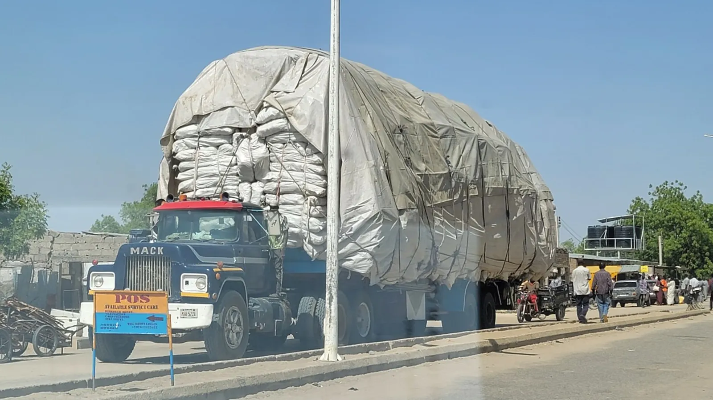
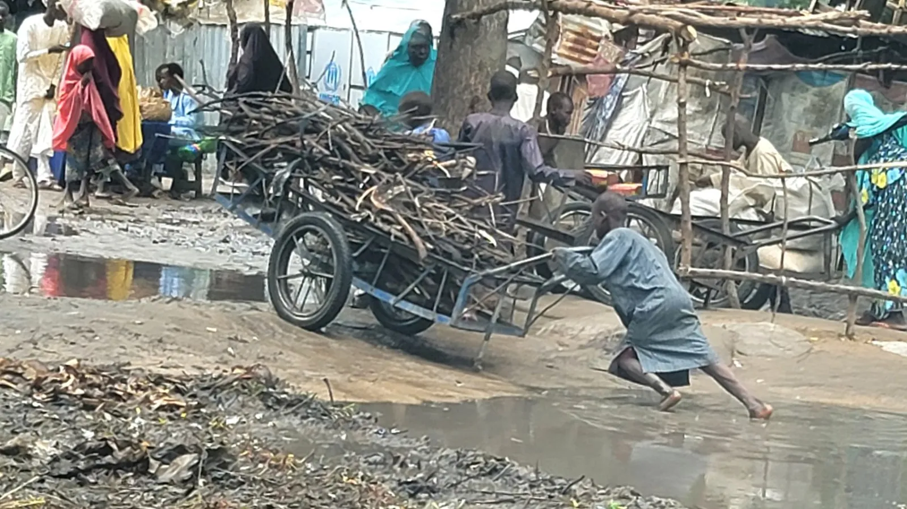
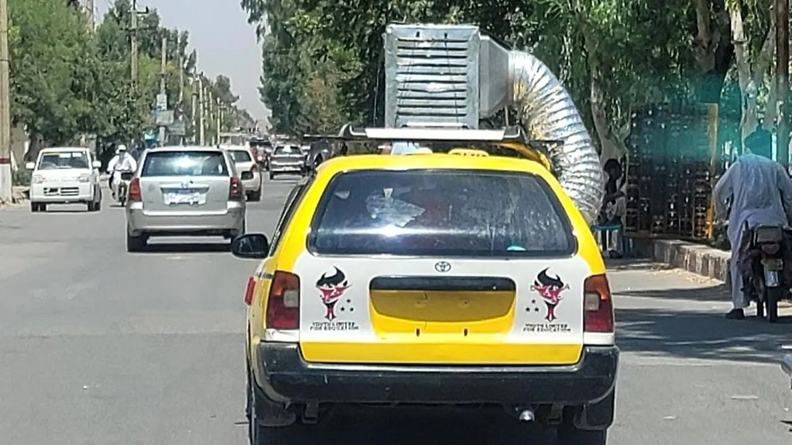
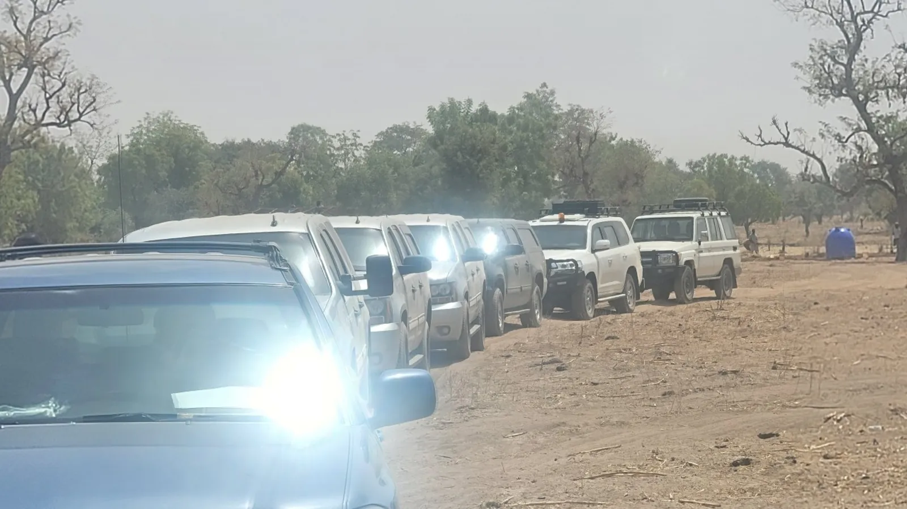
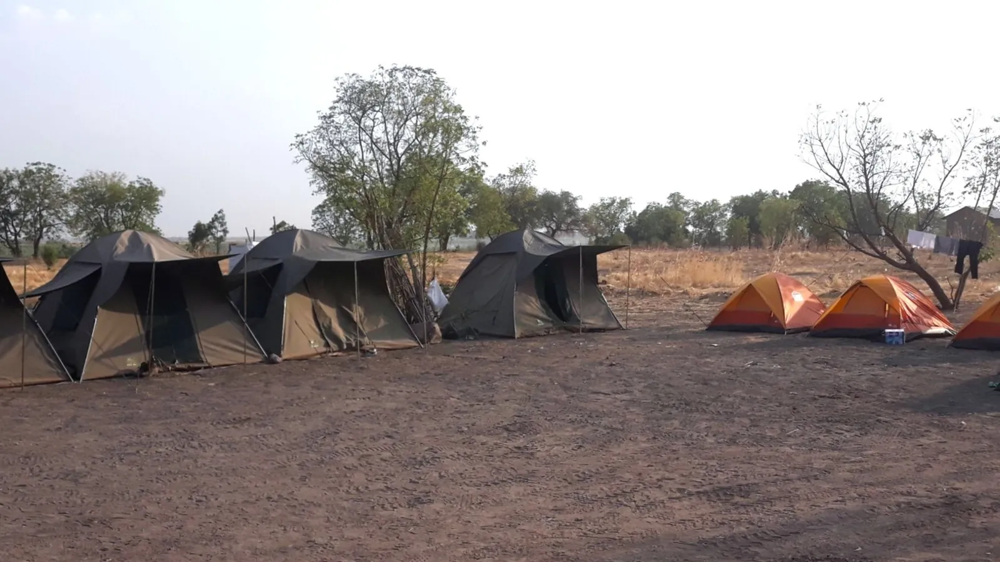
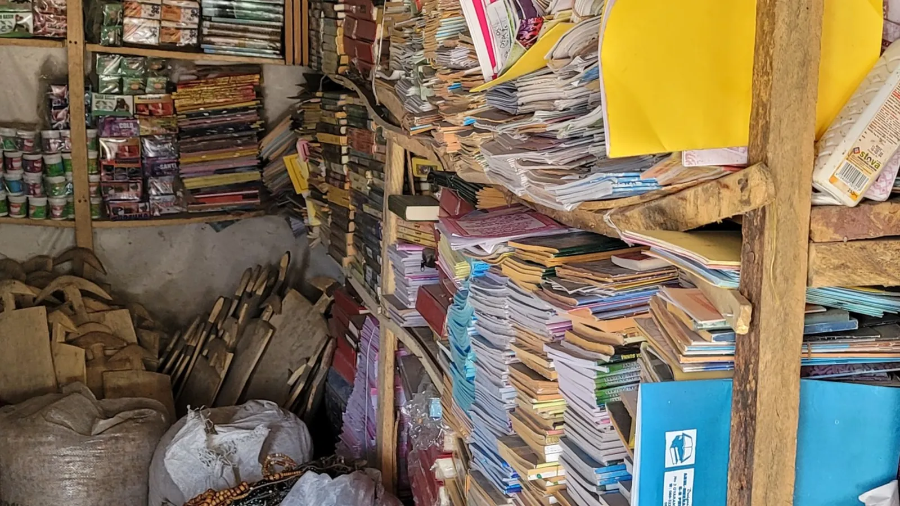
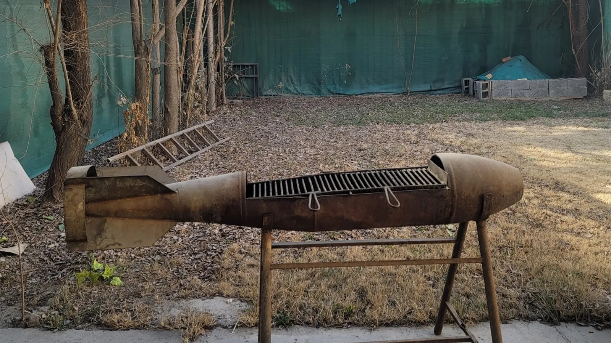
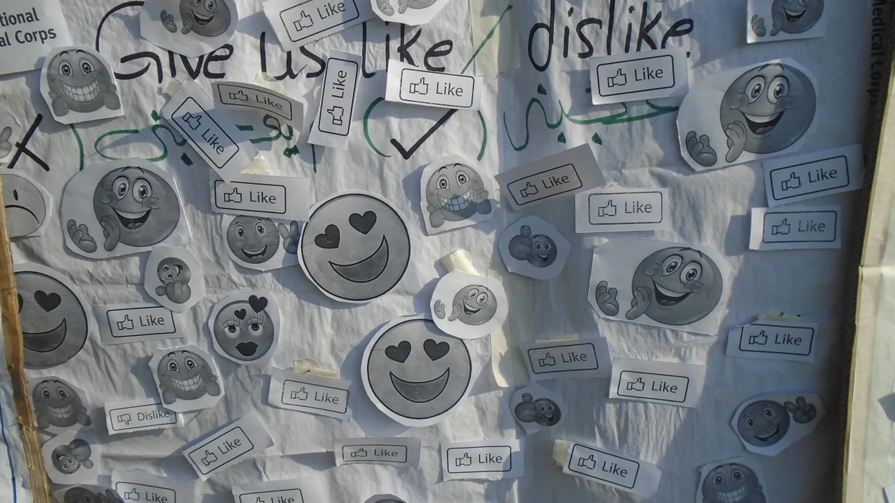
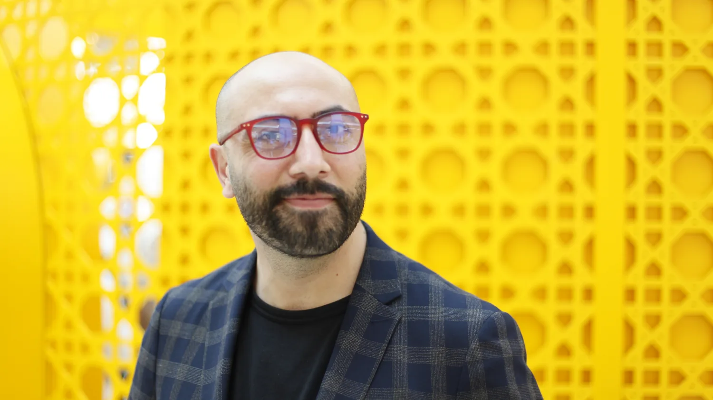

01 · overhead
Reducing INGO Overhead with Small c Cuts
An office that no longer opens doors is not representation, it is overhead.
Overhead becomes expensive the moment it stops earning its weight.
read the piece“Small c” is the term I use for quiet, strategic reductions that unlock real change over time. Ali Al Mokdad









small c cut 01/09
01 overhead
An office that no longer opens doors is not representation, it is overhead.
read the piece01 · overhead
An office that no longer opens doors is not representation, it is overhead.
Overhead becomes expensive the moment it stops earning its weight.
read the piece02 · headquarters
If the internal report isn’t prompting a decision, it’s just decoration.
This paper might provoke you. It might affirm what you’ve whispered in hallways, raised on field visits, or challenged in meetings.
read the piece03 · strategy
What we lack isn’t strategy. It’s strategic memory, strategic courage, and a design rooted in reality.
In one of my recent papers —some called it the HQ Efficiency Manifesto—I wrote about “small c” cuts: quiet, strategic shifts that make systems work better without breaking them.
read the piece04 · transformation
Cut what drains. Cut what distracts. Cut what slows.
If the word transformation stresses you out, if digitalization triggers a small internal panic, and if every new model feels like another round of pressure that lands on your shoulders before it reaches its value, you are not alone.
read the piece05 · regional offices
If organizations cannot share a fleet, they are not ready to share a strategy.
If you have ever worked in or with an NGO’s regional office, you know the feeling.
read the piece06 · fundraising
Fundraising is not revolution. It is optimisation in small shapes.
If you have ever sat in a fundraising strategy session that felt both urgent and disconnected from the operational realities, you know the frustration.
read the piece07 · advocacy
Influence is not a vibe. It is a practice.
It usually begins with good intention. A new campaign, a donor hint that visibility matters, a policy window that feels urgent.
read the piece08 · risk management
A traffic light that never stops traffic is just decoration.
The smoke alarm goes off. Everyone hears it.
read the piece09 · digitalization
The tool was real. The transformation was not.
Digital transformation in NGOs begins the way expensive mistakes begin: a polished presentation, a room full of well-intentioned people, and a shared belief that this time the system will make the work easier.
read the piece10 · the person who noticed
One precise correction at a time. No restructure required. No new committee.
Real optimization starts in the small choices leaders make with trust and honesty, the quiet shifts that return organizations to first principles and let the system serve the people instead of the other way around.
alialmokdad.com